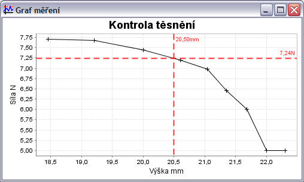

Umožňuje zobrazit hodnoty do grafu. Vlastnosti grafu jsou určeny nastavením v hlavním okně aplikace viz Nastavení Grafu. Toto nastavení se ukládá společně s naměřenými hodnotami do souboru. Lze také nastavovat další vlastnosti pomocí nabídky, která se objeví po stisknutí pravého tlačítka myši kdekoliv v grafu. Toto nastavení se neukládá společně s naměřenými hodnotami.

Zobrazený graf je v nezměněné podobě vložen do
protokolu o měření. Lze jej také jako obrázek uložit do souboru pomocí volby
Ulož jako..., která se nachází v nabídce grafu (objeví se po
stisknutí pravého tlačítka myši).